10/02/2022 — Tắc mạch/tái tưới máu qua 6 điện tâm đồ ‘bình thường’
Bản dịch tiếng Việt của bài "Occlusion/reperfusion through 6 ‘normal’ ECGs" – Dr. Smith’s ECG Blog. Giữ nguyên toàn bộ 12 hình ảnh của bản gốc.
Bài này do Jesse McLaren (@ECGCases) viết và đóng góp, với bình luận và chỉnh sửa của Smith, cùng phần bình luận của Ken Grauer (@EKGPress)
Một phụ nữ 80 tuổi đến viện
vì yếu mệt và té ngã, sinh hiệu bình thường và không có chấn thương. Điện tâm đồ được
máy tính dán nhãn ‘bình thường’, sau đó được bác sĩ tim mạch xác nhận. Bạn
nghĩ gì?

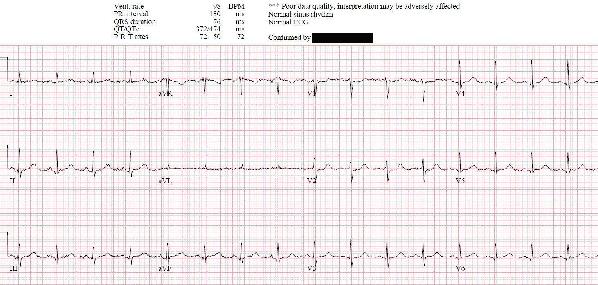
(Thuật toán Marqette 12SL)
Có nhịp xoang bình thường, dẫn truyền
bình thường, trục bình thường, tăng tiến sóng R bình thường và điện thế bình thường.
Thông thường có một chút ST chênh lên dạng lõm ở V2-3, nhưng ở đây lại
có ST chênh xuống dạng nằm ngang ở V2 và có thể cả ở V1.
Smith: dù không có thêm thông tin nào, phần diễn giải của tôi bổ sung rằng có sóng T tối cấp ở thành dưới và có thể cả ở V4-V6, cùng với ST chênh xuống soi gương kín đáo và sóng T đảo ngược ở aVL.
Bất kỳ ST chênh xuống nguyên phát nào ở
V1-4 (tức là không thứ phát sau rối loạn dẫn truyền do RBBB, RVH hay WPW) đều là
nhồi máu cơ tim do tắc (Occlusion MI) thành sau cho đến khi chứng minh được điều ngược lại, và thường đi kèm với
những dấu hiệu kín đáo ở các chuyển đạo dưới và/hoặc bên: “tất cả bệnh nhân
OMI thành sau đều có hoặc (1) STDmaxV1-4 ít nhất 1mm, hoặc (2) những dấu hiệu
kín đáo khác của OMI bên cạnh STDmaxV1-4 bất kỳ (kể cả khi <1mm).”[1] Mặc dù ST chênh xuống ở V2 dưới 1 mm, quả thực vẫn có những dấu hiệu kín đáo khác của OMI (ở các chuyển đạo dưới và bên).
So với điện tâm đồ cũ
(bên dưới, thực sự bình thường), ST chênh xuống ở V1-2 là mới, sóng T ở
III/aVF lớn hơn một chút và sóng T soi gương ở aVL không còn
dương nữa:

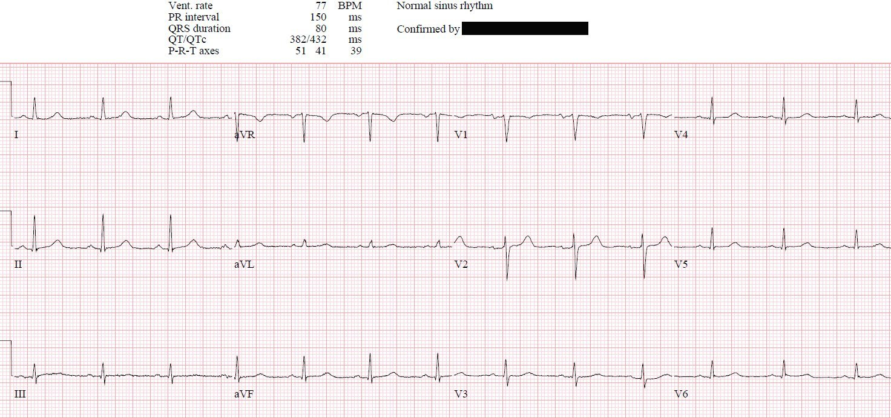
(Thuật toán Marqette 12SL)
Cơ hội đầu tiên để
chẩn đoán OMI thành sau kín đáo này đã bị bỏ lỡ, nhiều khả năng vì 1) bệnh nhân
đến viện với triệu chứng tương đương đau thắt ngực (anginal equivalent) thay vì đau ngực, 2) điện tâm đồ ‘STEMI
âm tính’, và 3) kết quả đọc bằng máy tính là ‘bình thường’.
Smith: điều này chứng minh nhận định của tôi rằng sóng T ở thành dưới trên điện tâm đồ đầu tiên là sóng T tối cấp. Hãy cùng xem các chuyển đạo dưới + aVL đặt cạnh nhau ở cả điện tâm đồ mới (trái) và cũ (phải):

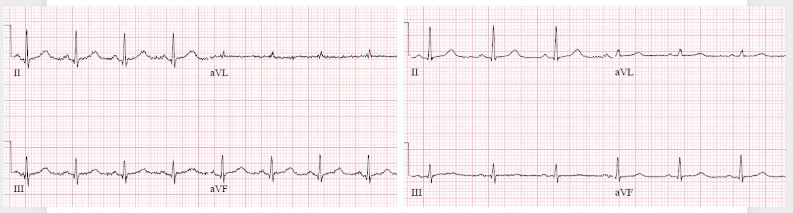
Và ở các chuyển đạo V4-V6 (bên trái là mới, bên phải là cũ):

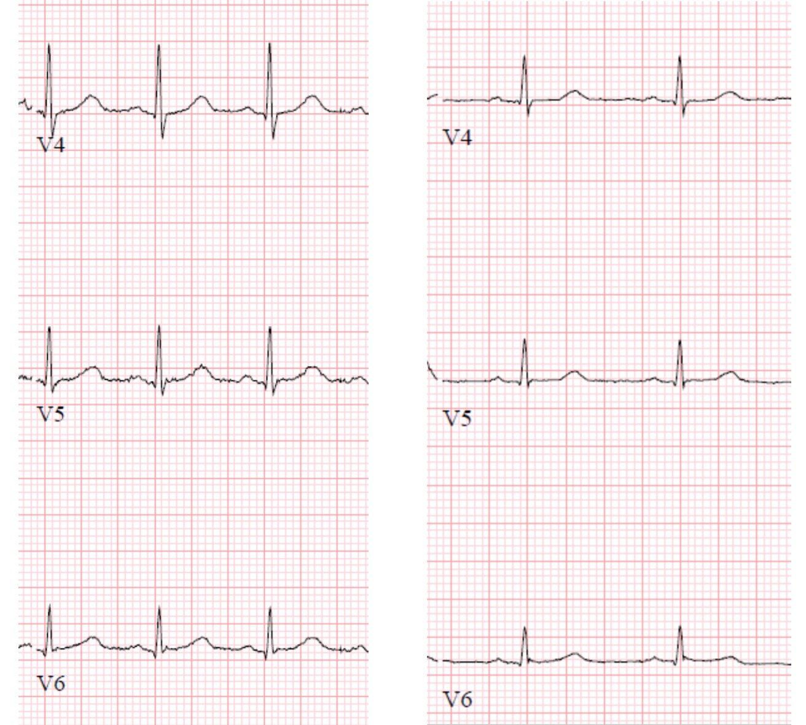
Cả hai phép so sánh này
Một giờ sau, kết quả troponin I
trả về 500 ng/L (bình thường <16 ở nữ), làm tăng nghi ngờ rằng tình trạng
yếu mệt của bệnh nhân là một triệu chứng tương đương đau thắt ngực. Không thấy thay đổi nào trên điện tâm đồ 12
chuyển đạo ban đầu, bác sĩ cấp cứu đã ghi điện tâm đồ 15 chuyển đạo (bên dưới, trong đó V4-6 thực ra là V4R và V7-8):

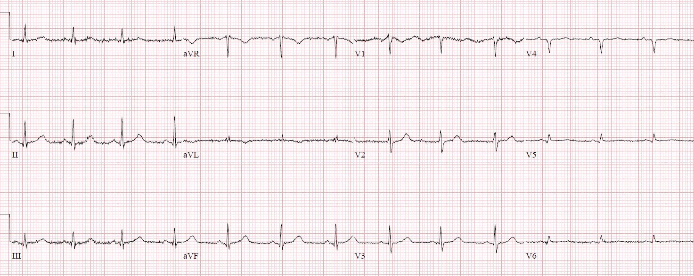
Không có ST chênh lên ở thành
sau, nhưng ST chênh xuống ở thành trước đã hết giữa điện tâm đồ thứ nhất và
thứ hai. Dù điện tâm đồ này âm tính với “STEMI thành sau”, việc hết
ST chênh xuống ở thành trước (kèm theo troponin tăng) khẳng định
OMI thành sau với tái tưới máu tự phát. Bệnh nhân được cho dùng aspirin và
điện tâm đồ 12 chuyển đạo được ghi lại 2 giờ sau đó, sau khi troponin tăng lên 1.300 ng/L:

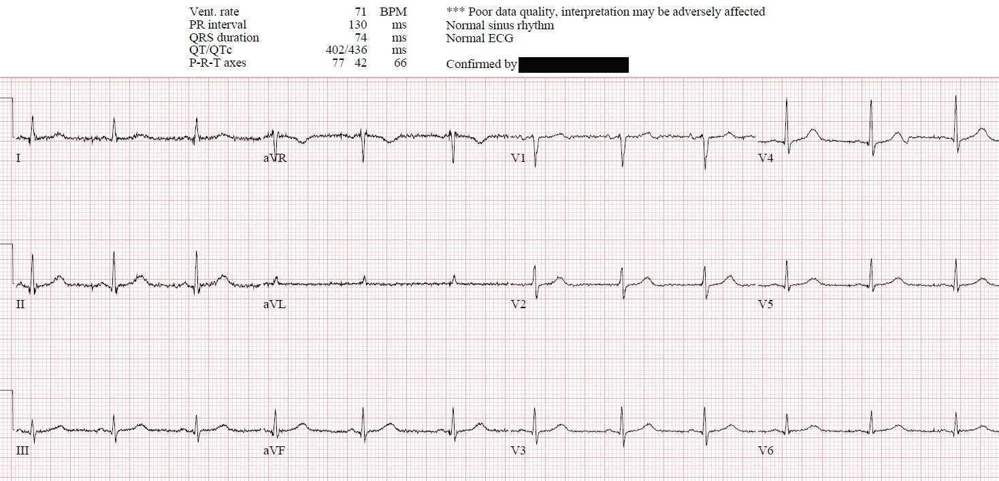
(Thuật toán Marqette 12SL)
Không tái xuất hiện ST chênh xuống
ở thành trước. Bệnh nhân được chuyển khoa tim mạch và nhập viện với chẩn đoán NSTEMI,
dùng thuốc kháng tiểu cầu/heparin và chụp mạch vành trì hoãn.
Trong cách phân đôi STEMI/NSTEMI,
NSTEMI lẽ ra có nghĩa là nhồi máu cơ tim không do tắc, nhưng bệnh nhân này
đã có nhồi máu cơ tim do tắc (Occlusion MI) thoáng qua với nguy cơ tắc lại (giống như ‘STEMI
thoáng qua’). Cơ hội thứ hai để chẩn đoán và đẩy nhanh việc chụp mạch vành
đã bị bỏ lỡ vì điện tâm đồ chưa bao giờ đạt tiêu chuẩn STEMI và tiếp tục được dán nhãn
‘bình thường.’ Nhưng nếu đây thực sự là nhồi máu cơ tim không do tắc (NOMI) thì lẽ ra không có
dấu hiệu tái tưới máu nào.
Sáu giờ sau, một điện tâm đồ khác
được ghi lại, kèm troponin lặp lại có xu hướng giảm, ở mức 1.000 ng/L.

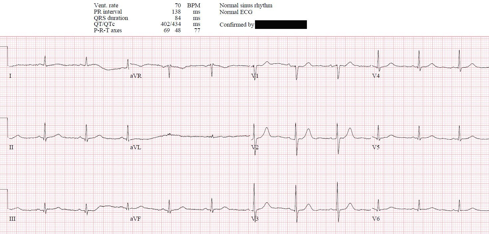
(Thuật toán Marqette 12SL)
Sóng T ở thành trước cao hơn một chút
và sóng T ở thành dưới đang trở về kích thước nhỏ bình thường. Troponin
tiếp tục giảm, và một điện tâm đồ khác được ghi lại 24 giờ sau đó:

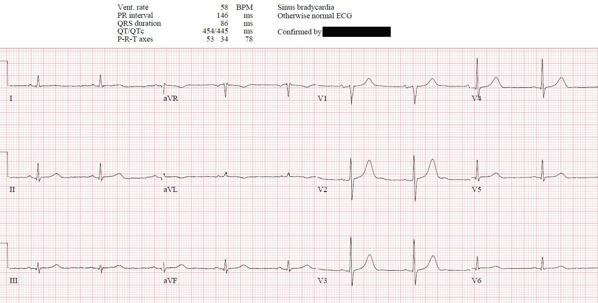
(Thuật toán Marqette 12SL)
Lúc này
sóng T ở thành trước cao rõ rệt, tạo vẻ ngoài của sóng T
tối cấp (kể cả ‘sóng T cao mới xuất hiện ở V1’). Nhưng trong bối cảnh ST chênh xuống ở thành trước
đã hết, đây là sóng T tái tưới máu thành sau, hình soi gương
của sóng T đảo ngược do tái tưới máu, và là điều chúng tôi gọi là “hội chứng Wellens của thành sau.” (4) Điều này càng khẳng định thêm chẩn đoán
OMI thoáng qua với nguy cơ tắc lại. Nhưng cơ hội thứ ba để đưa ra
chẩn đoán này đã bị bỏ lỡ, với một điện tâm đồ được dán nhãn và xác nhận là ‘bình thường’. Bệnh nhân được siêu âm tim cho thấy giảm động
thành dưới vùng đáy, tương ứng với các thay đổi trên điện tâm đồ. Hai ngày sau có
một điện tâm đồ khác:

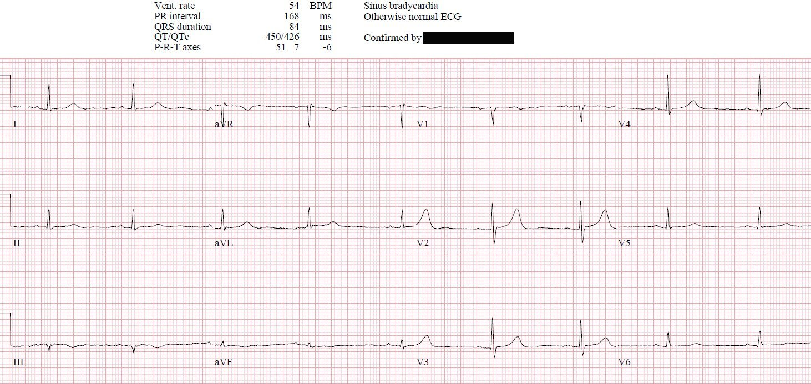
(Thuật toán Marqette 12SL)
Sóng T tái tưới máu thành sau đang
hết dần, nhưng giờ đây có phức bộ QS ở III kèm sóng T đảo ngược do tái tưới máu thành dưới
ở III/aVF—cũng được dán nhãn và xác nhận là ‘bình thường’.
Cũng lưu ý rằng có sóng T đảo ngược mới ở III với sóng T dương ở aVL, khẳng định nhồi máu thành dưới. Và lưu ý rằng sóng T ở V4-V6 giờ đã trở lại kích thước và “độ đầy đặn” (bulk) bình thường.
Chụp mạch vành
trì hoãn phát hiện tắc 95% RCA đoạn giữa và đã được đặt stent. Ngay cả khi đã có lợi thế
của việc nhìn lại, chẩn đoán ra viện vẫn gọi các điện tâm đồ là ‘bình thường’ và đưa ra
chẩn đoán ra viện là NSTEMI, khi hồi cứu lại thì đã bỏ lỡ cơ hội thứ tư để nhận diện một OMI thoáng qua. Diễn giải
tự động (và có vẻ cả việc xác nhận) chỉ xem xét từng điện tâm đồ một cách
riêng lẻ, bị giới hạn ở tiêu chuẩn STEMI, và không tính đến tái tưới máu. Dù
mỗi thay đổi điện tâm đồ khi xét riêng lẻ đều kín đáo, và một số khác biệt là do
khác biệt về điện thế, khi xét thành chuỗi chúng cho thấy một diễn tiến rõ ràng của OMI
thành sau từ tắc mạch (ST chênh xuống ở thành trước) đến tái tưới máu (bình thường hóa đoạn
ST và sóng T cao). Đây là chuỗi điện tâm đồ tập trung vào các chuyển đạo V1-3:

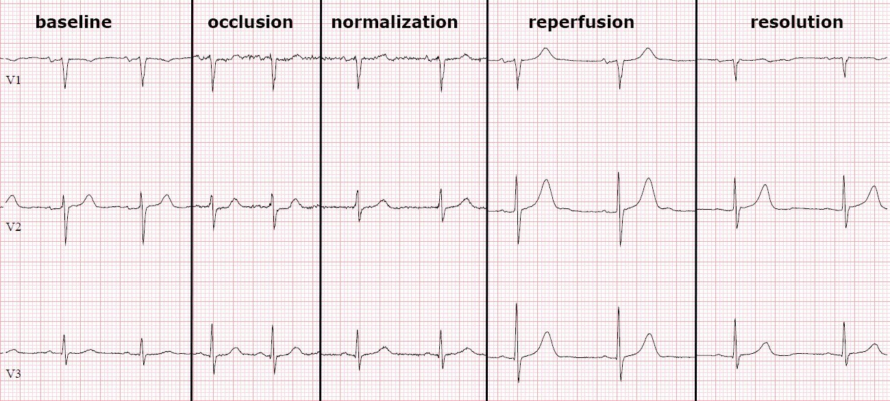
Một
số nghiên cứu nhỏ đã cho thấy các điện tâm đồ được
máy tính dán nhãn ‘bình thường’ và được bác sĩ tim mạch xác nhận ít có khả năng gây hậu quả
lâm sàng. Ca này có vẻ ủng hộ điều đó vì bệnh nhân có triệu chứng không điển hình
và nhồi máu nhỏ, và việc chậm trễ chụp mạch vành không gây ảnh hưởng gì. Nhưng đây
là một tình huống suýt bỏ sót (near miss). Bệnh nhân cao tuổi thường đến viện với triệu chứng tương đương đau thắt ngực,
vốn liên quan đến việc đến viện muộn, điều trị không đầy đủ và tỷ lệ tử vong
tăng gấp đôi ngay cả khi họ đạt tiêu chuẩn STEMI kinh điển.[2] Điều này càng trầm trọng hơn
ở những người không đạt tiêu chuẩn STEMI: OMI STEMI âm tính (STEMI(-)OMI) thành sau “có nồng độ troponin
đỉnh tương tự nhưng khả năng được thông tim
trong vòng 90 phút sau khi đến viện thấp hơn đáng kể…do không có tiêu chuẩn STEMI,
mặc dù thực tế là họ đã có thể được nhận diện dễ dàng và ngay lập tức bằng
STDmaxV1-4, bên cạnh các dấu hiệu kín đáo khác của OMI.”[1]
Bệnh
nhân có kết cục tốt không phải nhờ
điện tâm đồ được dán nhãn ‘bình thường’ mà là bất
chấp điều đó. Chỉ vì RCA của bệnh nhân tự tái tưới máu và không
tắc lại trước khi chụp mạch vành mà bệnh nhân này mới tránh được số phận của nhiều
bệnh nhân cao tuổi đến viện với triệu chứng tương đương đau thắt ngực và STEMI(-)OMI. Nhưng
những người khác không may mắn như vậy, vì thế chúng ta nên học hỏi từ những tình huống suýt bỏ sót này để nhận diện
tốt hơn các dấu hiệu của tắc mạch và tái tưới máu.
Điều cần nhớ:
- Bệnh nhân cao tuổi có tỷ lệ triệu chứng
tương đương đau thắt ngực cao hơn, vốn liên quan đến chẩn đoán muộn, điều trị không đầy đủ
và tỷ lệ tử vong cao hơn - ST chênh xuống nguyên phát ở V1-4 là
OMI thành sau cho đến khi chứng minh được điều ngược lại, và có thể đi kèm với những thay đổi kín đáo
ở thành dưới và/hoặc thành bên - Nếu các chuyển đạo phía sau trên điện tâm đồ 15 chuyển đạo
không có ST chênh lên, nhưng các chuyển đạo trước cho thấy ST chênh xuống đã hết,
điều này có thể giúp khẳng định thay đổi thiếu máu cục bộ động - Các OMI kín đáo bị bỏ sót trên điện tâm đồ đầu tiên có thể
được nhận diện trên các điện tâm đồ tiếp theo, bao gồm hoặc sự tiến triển của các dấu hiệu
tắc mạch, hoặc các dấu hiệu hồi phục và tái tưới máu - Sóng T đảo ngược do tái tưới máu (bao gồm cả
sóng T cao ở thành trước do tái tưới máu thành sau) có thể rõ ràng hơn
các dấu hiệu tắc mạch ban đầu và có thể giúp khẳng định chẩn đoán - Mô hình STEMI/NSTEMI có thể bỏ sót
toàn bộ diễn tiến từ tắc mạch đến tái tưới máu, và nên được thay thế bằng
OMI/NOMI - Đừng bao giờ tin vào kết quả đọc tự động,
kể cả kết quả ‘bình thường’
Tài liệu tham khảo
- Meyers HP và cs. Ischemic ST-segment
depression maximal in V1-V4 (versus V5-V6) of any amplitude is specific for
Occlusion Myocardial Infarction (versus nonocclusive ischemia). JAHA 2022 -
Grosmaitre P và cs. Significance of
atypical symptoms for the diagnosis and management of myocardial infarction in
elderly patients admitted to emergency departments. Arch Cardiovasc Dis 2013 - Khan AR và cs. Impact of total occluson of culprit artery in acute non-ST elevation myocardial infarction: a systemic review and meta-analysis. Eur Heart J 2017
- Driver BE, Shroff GR, Smith SW. Posterior reperfusion T-waves: Wellens’ syndrome of the posterior wall. Emerg Med J 2017;34(2):119–23. Truy cập tại: http://dx.doi.org/10.1136/emermed-2016-205852

===================================
BÌNH LUẬN CỦA TÔI, bởi KEN GRAUER, MD (10/2/2022):
===================================
Một bài viết tuyệt vời của Jesse McLaren — trong đó anh lần theo diễn tiến kín đáo nhưng hiện diện rõ ràng của OMI thành sau cấp đã bị các nhân viên y tế bỏ qua. Tôi sẽ bổ sung vài suy nghĩ vào hình minh họa diễn tiến do Dr. McLaren vẽ ở trên — mà tôi trình bày lại trong Hình 1.
- Như Dr. McLaren đã nêu — cách nhìn tuần tự này vào các chuyển đạo trước V1, V2 và V3 cho thấy diễn tiến rõ ràng qua các giai đoạn của tắc mạch cấp — tiếp theo là sự bình thường hóa các thay đổi ST-T — trên đường tiến tới sự hình thành những sóng T tái tưới máu vốn khẳng định chẩn đoán.
- Như tôi đã gợi ý nhiều lần trên Dr. Smith’s ECG Blog — tôi nhận thấy việc sử dụng nghiệm pháp soi gương (Mirror Test) cực kỳ hữu ích trong việc giúp hình dung các thay đổi ST-T đặc trưng của nhồi máu cơ tim thành sau cấp (Xem Bình luận của tôi ở cuối trang trong bài ngày 21 tháng Chín năm 2020).
- Chẳng phải nghiệm pháp soi gương giúp dễ nhận ra hình dạng bất thường của ST chênh xuống dạng bậc thềm kín đáo ở chuyển đạo V2 trên bản ghi Tắc mạch đó sao? (Ô thứ 2 trong Hình 1).
- Chẳng phải sẽ dễ nhận ra hơn rằng chiều cao và thể tích tăng lên của các sóng T dương ở Ô thứ 4 trong Hình 1 thể hiện sóng T Tái tưới máu hay sao?
- Một Điểm then chốt (Pearl) bổ sung cần tìm khi cân nhắc khả năng nhồi máu cơ tim thành sau đang tiến triển — là chiều cao tương đối của sóng R ở các chuyển đạo trước (mà về thực chất phản ánh hình soi gương của các sóng Q đang hình thành). Hãy chú ý sóng R ở chuyển đạo V2 cao hơn bao nhiêu ở 3 Ô cuối trong Hình 1.
- Cuối cùng — bên cạnh sóng T tái tưới máu đầy đặn ở chuyển đạo V2 của Ô thứ 4 — hãy chú ý sóng T ở chuyển đạo V1 của Ô này cao đến mức nào. Bình thường bạn sẽ không bao giờ thấy một sóng T nổi bật đến thế ở chuyển đạo V1.
Chúng tôi xin CẢM ƠN một lần nữa Dr. McLaren vì phần trình bày tuyệt vời này!

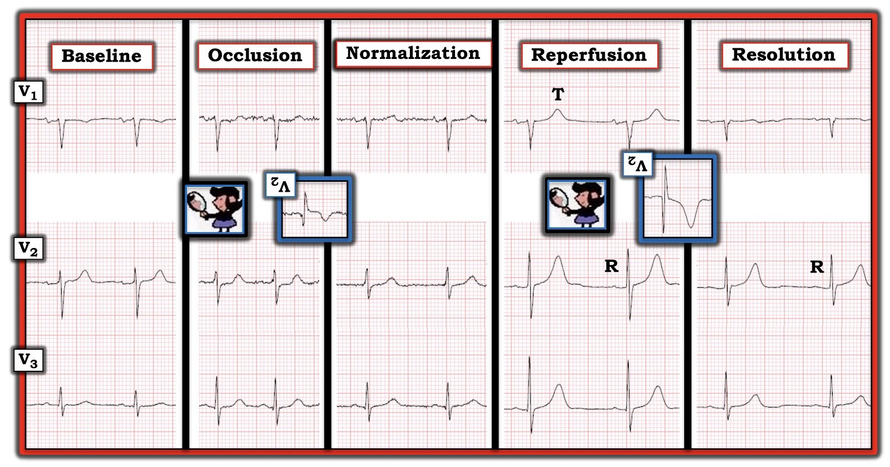